Handoff de implementação · HTML, CSS e JS puros · abra qualquer tela abaixo
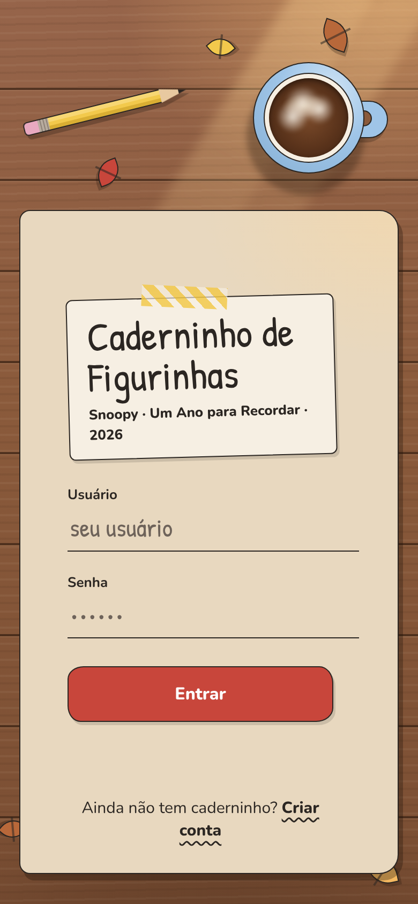
1 · Login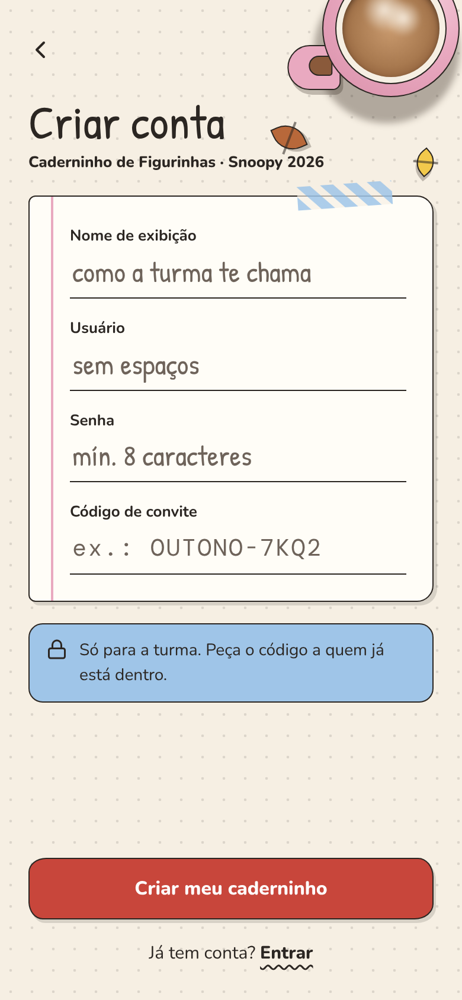
2 · Registro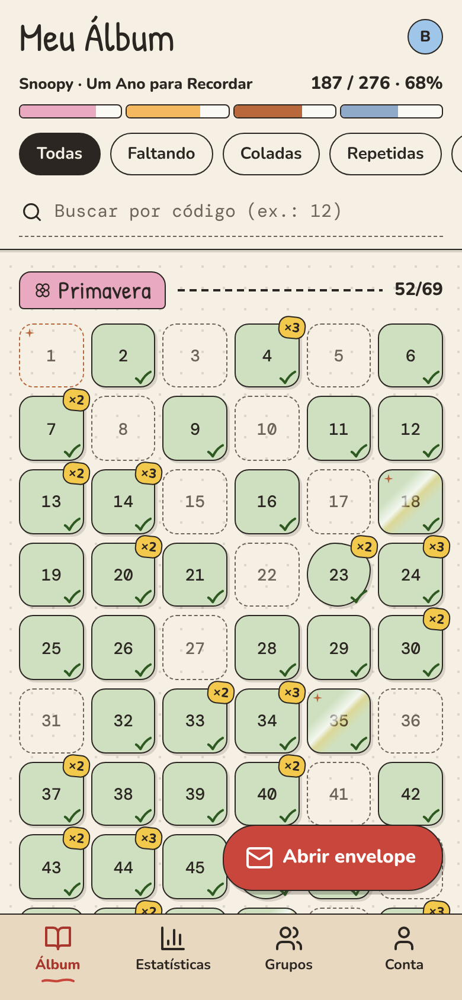
3 · Meu ÁlbumInterativa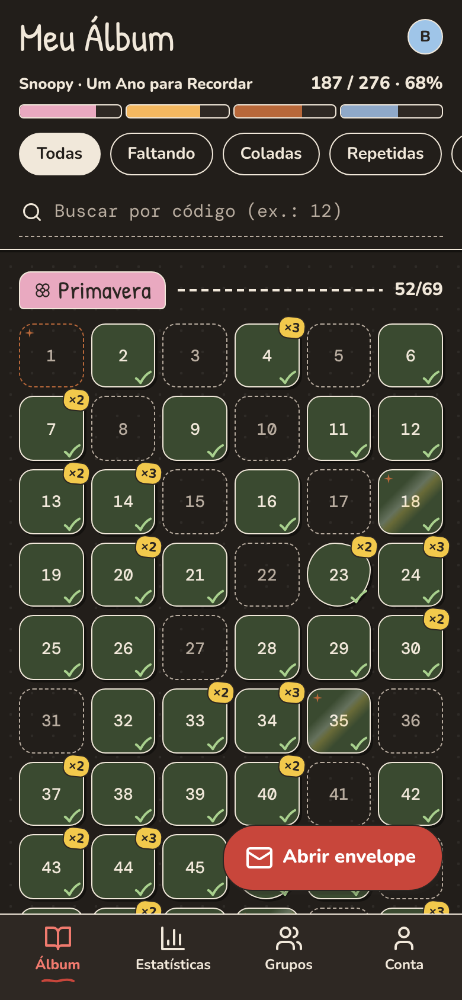
3 · Meu Álbum (escuro)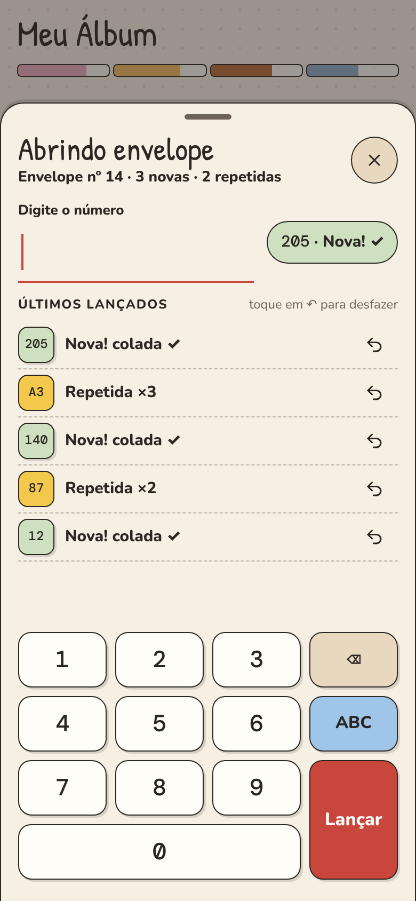
4 · Abrindo envelopeInterativa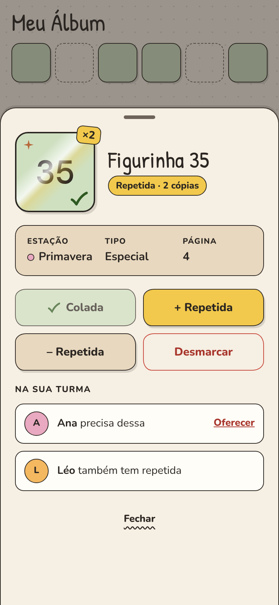
5 · Detalhe da figurinha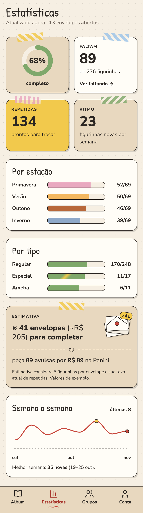
6 · Estatísticas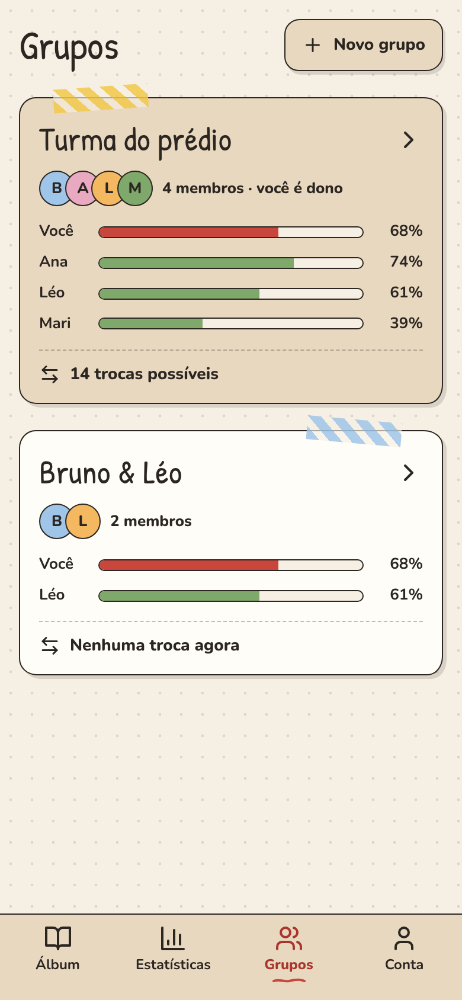
7a · Grupos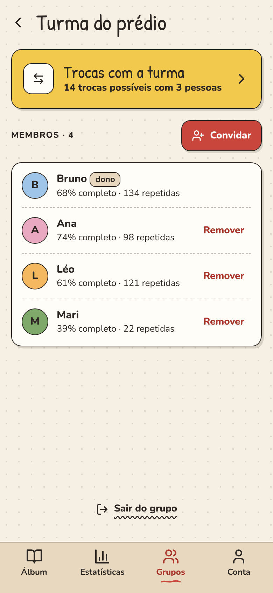
7b · Detalhe do grupo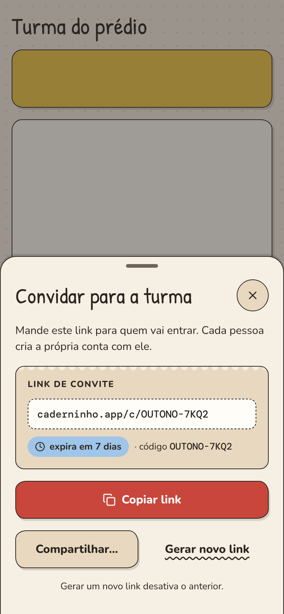
7c · Convidar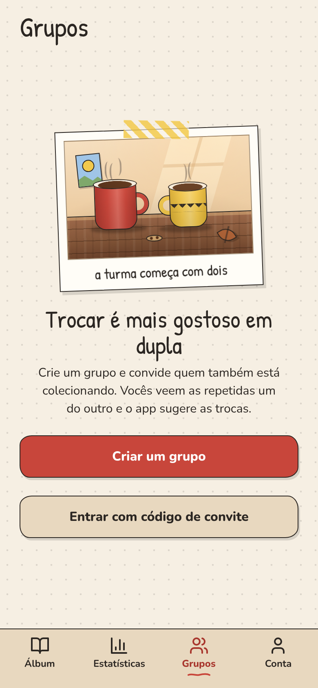
7d · Grupos (vazio)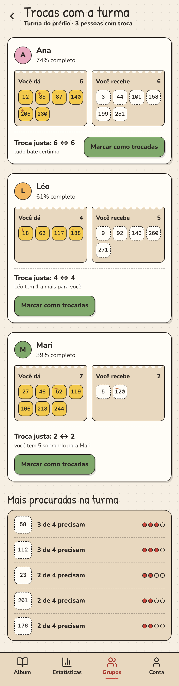
8a · Trocas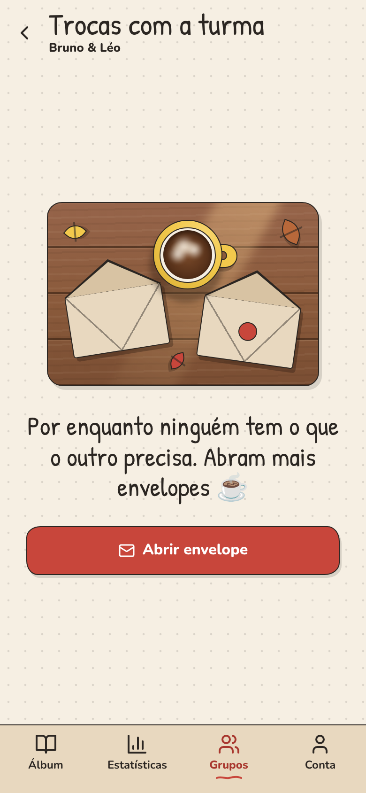
8b · Trocas (vazio)